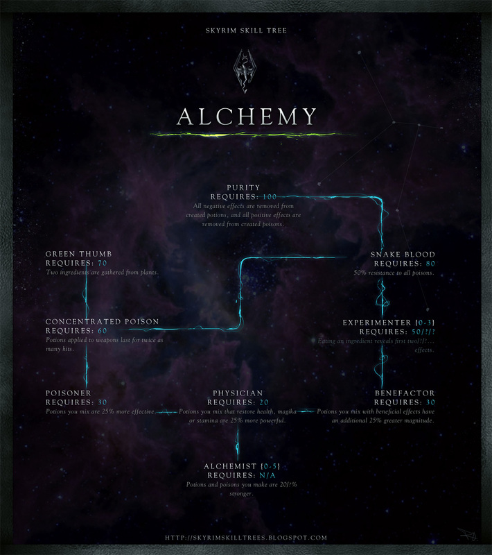
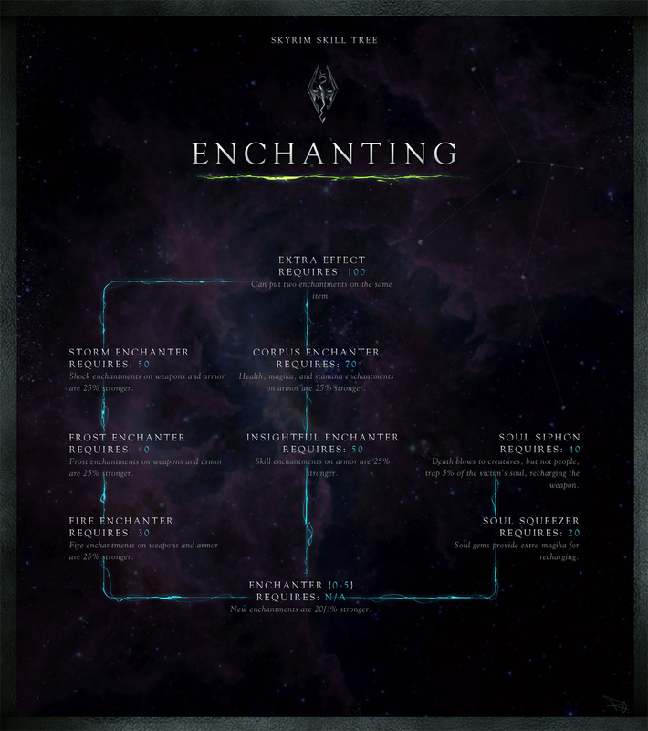
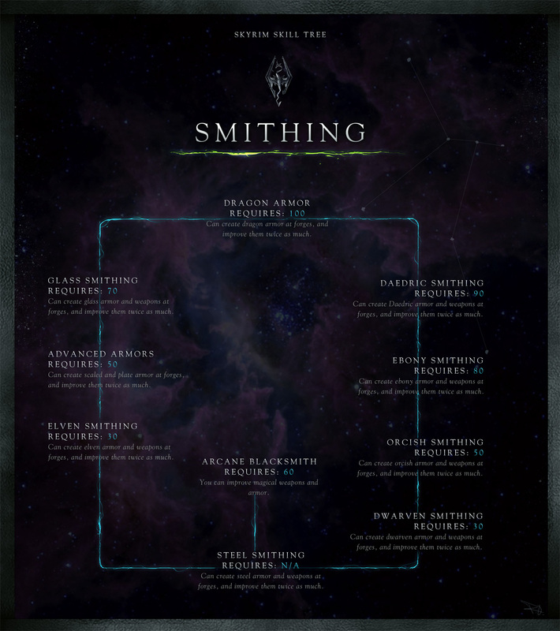

Skyrim For Homesteaders
Skill trees, tips, and tricks
Alchemy
One part of being a homesteader means brewing up all sorts of concoctions for yourself, your family, and your friends and we have you covered!

- Need a master of the art to train you?
- Arcadia owns a shop in Whiterun
- Ingun can be found in Riften
- Lami is currently in Morthal
- Babette resides in the Dark Brotherhood [members only]
- Looking to read up on the topic?
- Song of the Alchemists
- A Game at Dinner
- Mannimarco, King of Worms
- Herbalists Guide to Skyrim
- De Rerum Dirennis
- More of a DIY person yourself?
- The best way to level quickly on your lonesome is to brew, brew, brew, and sell, sell, sell.
- Try brewing regenerative potions, paralysis, Invisibility, Slow, or Fortify Carry Weight potions to gain skill faster.
- There's a rumor going around that Giant's toe and Salmon roe give extra boosts when used in a potion.
The only way to learn is to practice!
Archery
Hunting all that meat is a grueling task, let us give you some pointers!
- Looking for a skilled hunter to train you?
- Faemdal can be found in Riverwood
- Aela works for the Companions in Whiterun
- Niruin lives in Riften
- Want to research some history?
- Father of the Niben
- The Black Arrow, v2
- Vernaccus and Bourlour
- The Marksmanship Lesson
- The Gold Ribbon of Merit
- Training alone before the big hunt, are we?
- Check out Angi's Camp, south of Falkreath. She has some good target practice over there! Enough for 5 points no matter the level!
- If you've got the summoning abilities, use a minion or a familiar zombie as some target practice. Every hit counts!
- A bit more unconventional, buuuut, Lydia is good as a companion for some things... maybe just a touch of armour will do.
You can always just keep hunting too!
Enchanting
Want to make some weapons and armour that might turn on you if you look at them the wrong way?

- Enchanters are hard to come by nowadays, but how about these?
- Sergius Turranius attends the College of Winterhold
- Hamal can be found in Markarth
- Some light reading, perhaps?
- Twin Secrets
- A Tragedy in Black
- Enchanter's Primer
- Catalogue of Armor Enchantments
- Catalogue of Weapon Enchantments
- So, you just want to play with souls in your basement?
- Seek out the mage stone southwest of Riverwood to get a 20% skill boost.
- Getting a good nights sleep will add an additional 10%, or a good nights rest with a spouse will give 15%.
- With your buffs equipped, go ahead and disenchant all of those weapons and armor you'll never use. This will help you learn the spells too!
- Once that stops helping, use up those new spells with your soul gems!
It's a hard skill to master, but we believe in you!
Smithing
All those weapons and armour need some fine polishing!

- Looking to learn from the source?
- Eorlund Gray-Mane can be found in Whiterun
- Ghorza gra-Bagol runs a shop in Markarth
- Balimud resides in Riften
- Not looking to get your hands dirty?
- The Last Scabbard of Akrash
- Cherim's Heart
- Heavy Armor Forging
- Light Armor Forging
- The Armorer's Challenge
- Ready to jump in?
- Be unrelenting! Forge as many items as possible. Gold rings are all the rage, iron daggers are old news.
- Aside from quantity, go for quality. Add in some gemstones, make some jewlery, treat yourself.
- Get some transmute and anything that will increase your magica regeneration to speed up your turnout.
Watch out for that fire!